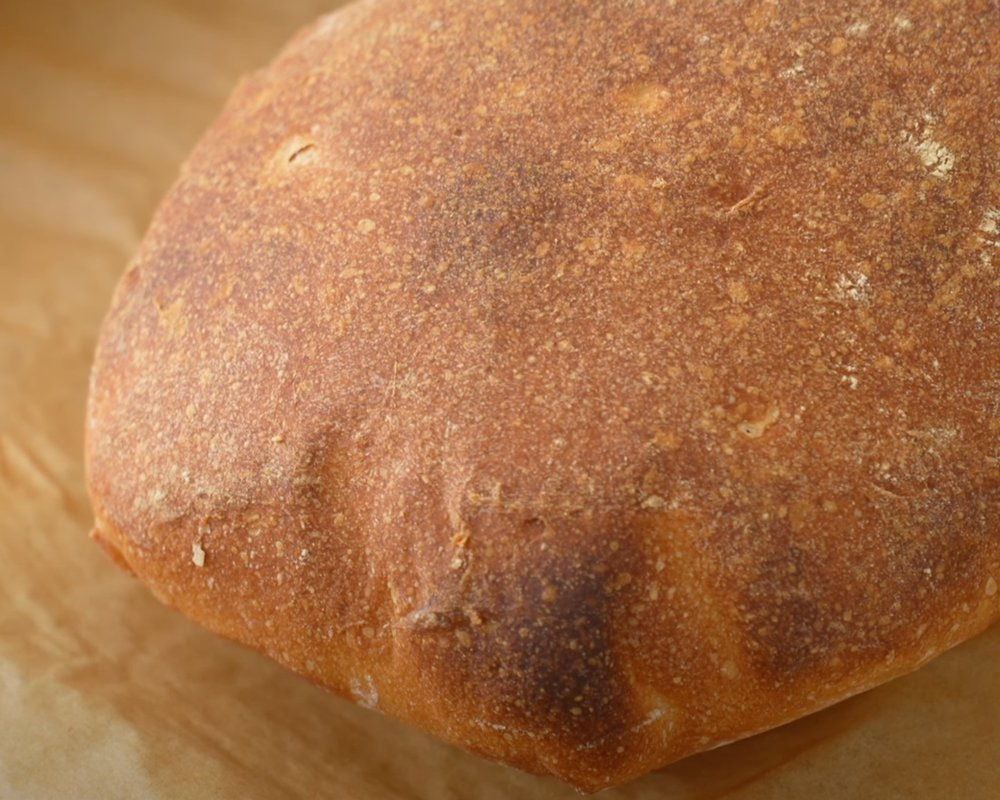

Bread

Ingredients
- 250 (1c) grams of warm water (approx 86F/30C)
- 2 grams (2/3 tsp) of instant yeast
- 300 grams of ripe poolish (see instructions below)
- 12 grams (2 1/2tsp) of salt
- 400 grams (3 1/3c) of bread flour
- 50 grams (1/2c) of whole wheat flour
Method
Dough
- In a medium bowl, mix together the warm water, instant yeast, and ripe poolish.
- Add the salt, bread flour, and whole wheat flour to the bowl.
- Stir with a sturdy spoon until the ingredients are reasonably combined.
- Then use a wet hand to squeeze and massage the dough until there are no longer any dry spots and everything is evenly combined.
- Cover the bowl with a lid and let the dough ferment for 30 minutes.
- Perform a strength building fold by pulling out a handful of the dough on one side and folding it over to the other side of the dough. Rotate the bowl slightly and repeat about 7 more times, rotating the bowl after each fold.
- After the folds, grab the ball of dough, around its side/bottom, picking up the ball, rounding and rotating it, then setting it back down to tension across the top and round it onto a ball. Do this several times.
- Cover and allow to ferment at room temperature again for another 30 minutes. After 30 minutes repeat steps 6 and 7.
- Cover and allow the dough to ferment at room temperature for another 60 minutes. As this point you’ve fermented for 2 hours total. When you check back this time, the dough should have doubled in size.
Bread
- Flour your work surface and gently flip the dough out onto it.
- Flatten the dough slightly with a flat hand and pop any air bubbles.
- Shape the dough into a rough square.
- Cut the dough in half to create two equal rectangles.
- Transfer each loaf onto a parchment-lined sheet tray to proof.
- Cover with a sheet tray and let it proof for 60 minutes.
- Preheat the oven to 480°F (250°C).
- Bake the loaves for 20 minutes.
- After baking, let the loaves cool slightly before slicing with a bread knife.